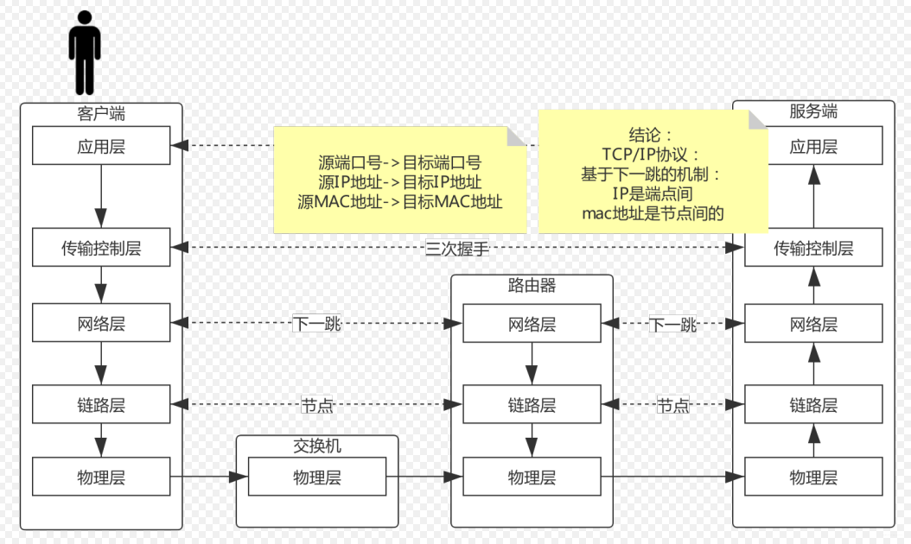
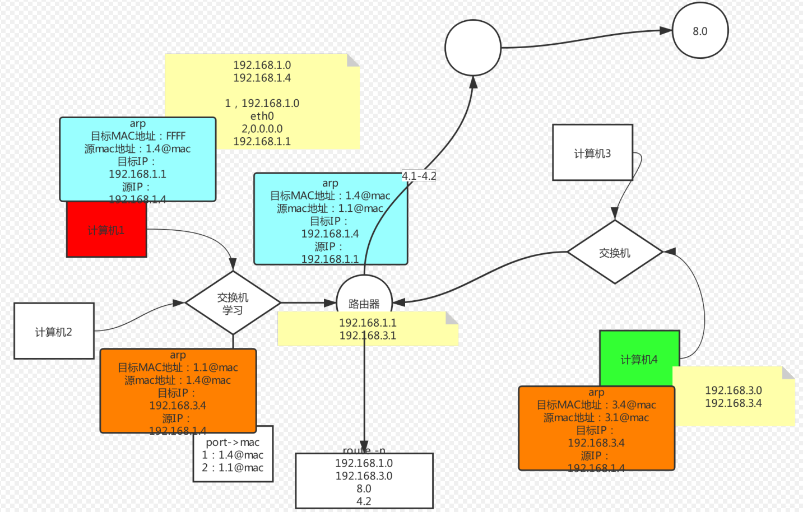

LVS 负载均衡
网络协议原理
引入
中国网络上可以产生消费的活跃用户约2.4亿，互联网人数较多，基础人群大。企业应该把钱花在哪里？营销上，而不是技术上。这样你赚得更多。案例比如，陌陌：CCTV广告，营销让人们下载去使用这个软件，你可以去百度买关键字排名，你可以去找微博大V，等等。假设你的营销手段能让20%人看到，有2%的人点击下载，大约1000万人。这时候你的“首屏广告”已经赚了好多了。再如果有的用户愿意付费，…，于是，在这个时代，高并发已经是每一家企业都要面临的。
假设高并发被解决了，在web容器的日志里你要记录些什么？分析渠道的流量的质量，分析不同的渠道给我带来多少的访问量。每个渠道的转化率，购买力。这样就可以知道下一轮投资应该在什么渠道多投广告。中国在从制造向服务行业转型（service）。
七层模型
软件“工程”学：有分层、解耦的概念，因此我们有七层模型。

TCP / IP（详见5.2节）
TCP 是面向连接的，可靠的传输协议，是有确认的。三次握手->数据传输->四次分手，这个过程称为一个最小粒度，不可被分割。service mesh 号称微服务的下一代，你要懂点网络，学service mesh就好懂了。
子网掩码：将 IP 地址与子网掩码做按位与运算，得到网络号。
路由表
route -n 查看路由表，路由表是动态生成的。
192.168.150.2 是网关，能够和任何目标地址匹配上。指示了你发送的数据包想要出这个局域网，就需要走 192.168.150.2 ，同一局域网的两个端点想要通信，不需要走下一跳，可以直接通信。只有在不同局域网之间的通信，才需要下一跳机制。

下一跳机制
基于下一跳机制：每一个互联网的设备，内存中不需要存储全网的数据，只需要存储它周边一个网络当中的数据。有人做过一个实验，从美国向外发送所有的数据包，另一端都能够按照正确的顺序拼接。这个实验证明了基于下一跳的TCP传输方式是可以保证可靠传输的！
路由判定：通过按位与找到下一跳
链路层：在网络层的基础上，又封装了一层。在发送方发出的网络包去寻找接收方的整个过程中，ip地址和port不会发生变化，变化的是随着每一次发到下一跳的时候的mac地址的改变。
arp -a，查看同一局域网内，ip地址和硬件地址的映射
TCP/IP 协议是基于 下一跳 的机制：在不同跳之间，MAC地址会发生变化，改成下一跳的MAC地址。而IP地址/端口号不会发生变化。
- IP 地址的最终目标是 端点 间的
- MAC 地址的目标是是 节点 间的
路由器、交换机
路由器就是要连接不同的网段，它是用来选择路线的。它里面有路由表，可以进行路由转发的判定。
交换机是负责同一个网络中转发，他只要转发就行了。
ARP 协议
发送端必须获取到目的MAC地址，MAC地址通过ARP协议来获取。
arp -a本质就是一个IP地址->MAC地址的对应表，表中每一个条目分别记录了网络上其他主机的IP地址和对应的MAC地址。
ARP表在初始的时候是空的。

ARP 请求
主机A的ARP缓存表中不存在主机C的MAC地址，所以主机A会发送ARP Request来获取目的MAC。主机A不知道主机C的MAC地址，所以目的MAC地址为广播地址FF-FF-FF-FF-FF-FF。交换机收到这个特殊的包之后会广播出去，ARP request报文会在整个网络上传播，该网络中所有主机包括网关都会接受到此ARP request 报文。网关会阻止该报文发送到其他网络上。
ARP 响应
所有主机接收到该ARP request报文后，会检查它的目的协议地址（一般是00-00-00-00-00-00-00与所有的匹配）字段与自身的IP地址是否匹配。如果不匹配，则该主机将不会响应该ARP request报文。如果匹配，则该主机会将ARP报文中的源MAC地址和源IP地址信息记录到自己的ARP缓存表中，然后通过ARP Reply报文进行响应。
另外，交换机具有记忆，下一次再遇到相同的目标地址时，就不需要广播了，直接发送到目标端口。现在通常情况下，计算机联网后会主动向外通告自己的mac地址，减少了主动通过ARP拉取的过程。
案例
假如我有另一台主机B，主机B的IP地址是192.168.150.3，我主机B上添加了一个虚拟网卡192.168.88.88之后，想要在当前这主机A上ping通这个新添加的网卡地址，需要手动配一下路由表条目，否则这个ping会被发送到网关192.168.150.2上，导致ping不通。

网络包传输的过程
看下图，一个网络包在发送的过程中，每经过一跳，它的目标mac地址、源mac地址都要通过路由器发生改变，而源IP、目标IP始终是不变的。

负载均衡 & LVS 的引入
同一网络当中IP地址不能重复出现，否则会冲突，不知道应该发给谁。那怎么使用多个服务器实现多并发呢？
为什么Tomcat承受的并发少？因为Tomcat是在协议的第7层，也就是应用层的软件，是整个网络通信过程中最末端的层次。况且Tomcat是Java开发的，它跑在JVM上，又要进行用户态内核态的切换，这样就更慢了。（Nginx也是在7层应用层，所以Nginx的带宽是有上限的，官方压测单机并发5万。但是LVS是在4层的，可以承受更大的并发；socket可以看做是在第4层的，是一个规范的接口）
路由器只是三层的设备，只需要做转发。
现在我们从通信的角度考虑，如果有一个负载均衡服务器设备，可以根本不需要和客户端握手，收到数据包就直接转发出去，是数据包级别的转发。这样能够提高性能，但看不到数据包的内容（uri 等），所以要求后台的客户端是镜像的，一模一样的。这就是一种 数据包级别的四层负载均衡技术。
我们得到下面这样的拓扑模型，可以解决负载均衡的问题。

首先，我们统一下命名： CIP：客户端client IP地址 VIP：负载均衡服务器的虚拟virtual IP DIP：用于分发的dispacher IP RIP：真实的服务器的real IP
NAT 网路地址转换
网路地址转换一般出现在路由器上 首先我们要知道，私有地址不会出现在互联网上
（1）S-NAT 模式：源地址替换协议
假设你和你女朋友在家都要访问百度，你的IP:port是192.168.1.8:12121，你女朋友IP:port是192.168.1.6:12121，如果不进行地址转换的话，你们俩的地址发到百度8.8.8.8:80之后，百度看到的都是6.6.6.6:12121，这时候百度服务器就懵了，不知道这俩有什么区别。那怎么解决这个问题呢？
使用NAT网络地址转换，路由器自己维护一张转换表，把你俩的192.168.1.8:12121和192.168.1.6:12121分别转换成6.6.6.6:123和6.6.6.6:321，用不同的端口发送给百度。等收到返回的数据包后，再按照自己记录的转换表，把网络包发送回给你和你女朋友。你家、你单位、你的虚拟机都是选的NAT这种模式。

（2）D-NAT 模式：目标地址转换协议（基于3层）
可以用下图这种方式实现负载均衡：客户端发来的请求到负载均衡服务器，负载均衡服务器将请求分发到后面的server上，server将响应返回给负载均衡服务器，注意这之间需要多次源IP与目标IP的替换。
弊端：
- 它在通信的时候是非对称的，负载均衡服务器的带宽成为瓶颈：客户端给服务端发送的请求数据量是很小的，但是服务端给客户端返回的数据量很大。于是，下行的数据使服务器带宽成为瓶颈。早期的 ADSL 电话线理论上可以达到 6M 的全速单一方向带宽，分为上行和下行，如果平分的话，上下行都是3M。所以运营商做了手脚进行了调整，将下行的带宽调的很大，将上传的带宽调的比较小。
- 地址转换消耗算力

怎么解决上述弊端？如果能够让 real server 返回的数据不经过负载均衡服务器，而是直接返回给客户端就好了。
（3）DR 模型：直接路由模型（基于2层）
DR 模型，替换的是MAC地址而不是IP地址，也就是我们所说的“MAC地址欺骗”
于是我们想啊，如果有这么一种技术：每一个server都能够配一个VIP，但由于IP不能重复，这个VIP对外隐藏，只对内可见（其实是对ARP协议进行手术）。两台server共同在负载均衡服务器上对外暴露同一个VIP，别人请求只能请求到这台负载均衡服务器上来，这样就能从server直接向客户端返回数据包，而不需要走负载均衡服务器了。
负载均衡服务器在转发数据包的时候，将封装的目标 mac 地址修改为 real server 的 mac 地址。mac 地址是点到点的，代表的是一跳的距离，要保证负载均衡服务器与你的 server 在同一个网络中，不能下一跳跳到别的网络去。这种修改 mac 地址的模式是基于2层链路层的，没有修改3层网络层。
缺点：是不能跨网络，负载均衡服务器和真实服务器 RS（real server）要在同一个局域网。这是一个约束。 优势：速度快，成本低

（4）隧道模式
假设我们有好多好多的RS（real server），现在这些RS和负载均衡服务器不在同一个机房了。怎么解决这个问题？使用隧道技术。啥是隧道技术？
在CIP->VIP外面包裹一层DIP->RIP地址，这样数据包就可以顺利的从负载均衡服务器被发送到 server1
server1收到这个数据包之后，把外层的DIP->RIP撕掉，就能看到真正的CIP->VIP，自己处理之后，根据CIP->VIP直接返回给客户端。
我们以往用到的PPPOE这种协议就是这种技术。我们所说的 VPN，翻墙，用到的也是这种技术。